Rework of Office Blue skin
The Office Blue skin has much greater fidelity to the Office 2007 Blue skin.
Here is a screenshot of Office Blue in release 5.0:
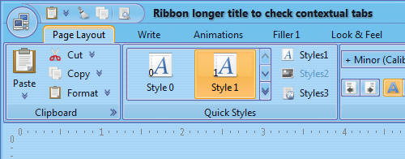And here is the same application under release 5.1:
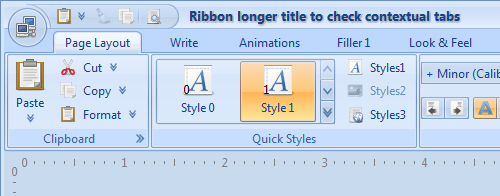Rework of Office Silver skin
The Office Silver skin has much greater fidelity to the Office 2007 Silver skin.
Here is a screenshot of Office Silver in release 5.0:
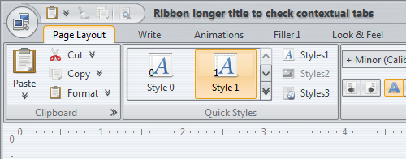And here is the same application under release 5.1:
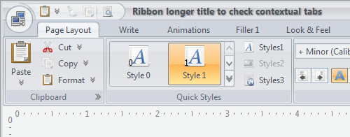Extended skinning capabilities
The following API has been added to the
SubstanceColorSchemeBundle class:
/**
* Registers the color scheme to be used for the specified visual area of
* controls under the specified states. For example, if the light orange
* scheme has to be used for gradient fill of rollover selected and rollover
* controls, the parameters would be:
*
* scheme=light orange scheme
* associationKind=ColorSchemeAssociationKind.REGULAR
* states=ComponentState.ROLLOVER_SELECTED, ComponentState.ROLLOVER_UNSELECTED
*
* @param scheme
* Color scheme.
* @param associationKind
* Color scheme association kind that specifies the visual areas
* of controls to be painted with this color scheme.
* @param states
* Component states that further restrict the usage of the
* specified color scheme.
*/
public void registerColorScheme(SubstanceColorScheme scheme,
ColorSchemeAssociationKind associationKind,
ComponentState... states)
This API provides finer control over associating color schemes with different visual parts of the UI. It is used extensively in the reworked Office Blue and Office Silver skins (see above), with custom color schemes for tabs, tab borders, marks and separators.
Note that the SubstanceColorSchemeBundle.registerBorderColorScheme
is deprecated and will be removed in version 6.0. Use the new API, passing the
ColorSchemeAssociationKind.BORDER
as the second parameter
In addition, the SubstanceColorSchemeBundle.getBorderColorScheme
and SubstanceColorSchemeBundle.getHighlightColorScheme
are deprecated as well in favor of the new
SubstanceColorSchemeBundle.getColorScheme
that gets ColorSchemeAssociationKind
as its second parameter. Use the new API, passing the
ColorSchemeAssociationKind.BORDER or
ColorSchemeAssociationKind.HIGHLIGHT.
These two methods will be removed in version 6.0.
Improved performance
The overall performance of version 5.1, as measured by the dynamic scenario suite from the LightBeam project has been improved by around 3.5%.
Better support for disabled icons
The AbstractButton.setDisabledIcon API
can be used to associate custom icons for disabled buttons. By default,
disabled buttons that do not use this API show grayscale version of the icon.
While this is adequate for the core look-and-feels and most Substance skins,
it fails short for colored skins such as
Autumn or
Office Blue.
The screenshot below shows how a disabled button looked under Autumn skin in release 5.0 (the copy button on the left):
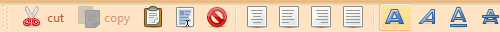And here is how it looks now:
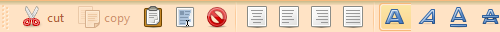Here is how the disabled icon looked like under Office Blue in version 5.0:
And here is how it looks now:
Better support for themed icons
The USE_DEFAULT_THEMED_ICONS client property can be used to specify that icons on buttons and toggle buttons should match the color of the current color scheme when they are in default state. This has been extended to labels, menus, menu items and tabs.
The new implementation that better preserves the details of icons on disabled buttons also results in crisper and more recognizable icon details for the themed mode. Here is how the themed icons looked before under Autumn:
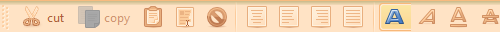and here is how it looks now:
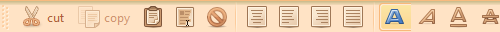Here is how the themed icons looked before under Office Blue (almost unrecognizable, since the color schemes are very washed):
and here is how it looks now:
Visual editor for color schemes
Jitterbug is a visual editor for creating and editing color schemes for Substance. It primarily addresses the scenarios where you need to translate design mockups or emulate existing UI visuals as a Substance skin. This tool has been used to create and refine all color schemes currently used in Office Blue and Office Silver skins.
The following screenshot shows Jitterbug in action:
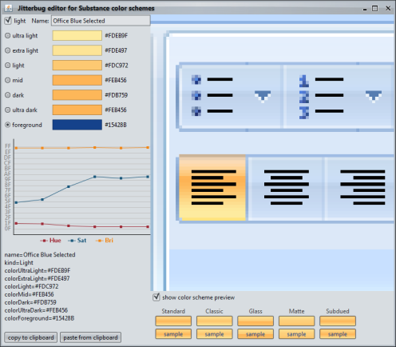Extended support for very large fonts
Support for very large fonts, mainly oriented towards point of sale (POS) systems has been extended to additional core Swing components.
The following screenshot shows a 72 point combobox with the mouse over the arrow button under Substance 5.0:
And here is the same combobox under Substance 5.1:
The top-right and bottom-right corners of the button are no longer out of sync, with the top-left and bottom-left corners having a perfect straight connection.
The next screenshot shows a 72 point progress bar under Substance 5.0:
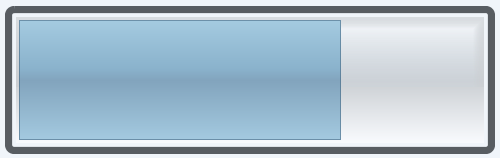And here is the same progress bar under Substance 5.1:
Here the border outline of the selected part has the correct stroke width, as well the right alignment with the inner gradient fill.
The next screenshot shows a 72 point slider with mouse over the thumb under Substance 5.0:
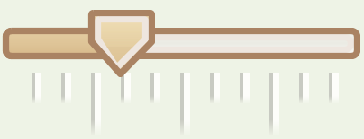And here is the same slider under Substance 5.1:
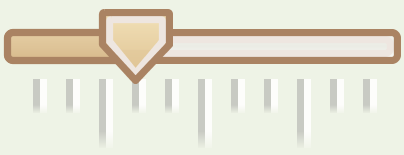Vietnamese locale
Substance-specific labels (system menu entries, Xoetrope color chooser panel, heap status panel, menu search panel, ...) are now localized to Vietnamese as well:
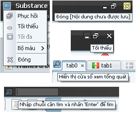Extended tracing of EDT violations
The built-in tracing of Event Dispatch Thread violations has been extended to:
- button models
- scroll bars
- progress bars